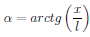
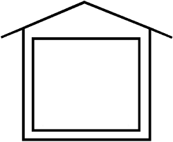
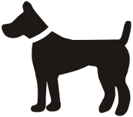
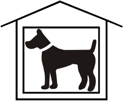

Simultaneous perception is first step of binocular vision. It's ability to simultaneous perception two images placed on each eye's retina.
To check simultaneous perception different images are presented for left and right eye. If patient can't see one of them or perceive them alternately, he/she don't have ability to simultaneous perception.
Program includes 5 test checking simultaneous perception. They consists of 2 elements presented for different eyes:
Exemplary on picture 1 there is element visible for one eye and on picture 2 - visible for second eye. Pacient with ability to simultaneous perception should perceive image similar to image 3.
Patient can correct his phoria by moving one of elements in whichever direction.
Phoria is calculated from following equation on the basics of movement suitable element x and distance from monitor l.



